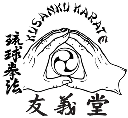

Dojo Kun/ Guiding principle
1. Strive for a good moral character.
2. Keep an honest and sincere way.
3. Cultivate perseverance or a will for striving.
4. Develop a respectful attitude.
5. Restrain my physical abilities through spiritual attainment.

Guiding Principles
1. When asking to taught be submissive and free from prejudice, accept the teaching as shown. In this way you will not establish your own peculiarities or bad habits.
2. Be polite and obedient to the master and other superiors. Be courteous among fellow students and followers. You must strive to develop humbleness.
3. Cultivate a spirit of perseverance. You will develop a healthy body if you have strength of mind and train fearlessly.
4. Strive to be a warrior for the construction of a peaceful and free world, by using the character building, morality and spirituality contained in the way of karate.
5. In daily conduct do not encourage fights or arguments.
6. Move from easy to difficult and from simply to complicated. More time is required to train longer and harder as you progress. Do not hurry or engage in senseless or reckless practice. Develop gradually.
7. Become familiar with the use of the makiwara and other training equipment. Train yourself to use your fist, body and positions. Be patient and study earnestly the katas and matches. Do not aim for hurried success.
8. In the past a single kata of studied for three years. A long time ago a particular master analyzed a kata for over ten years. Do not think you have mastered a kata and become proud of your success. Pride will lead to hurt your achievement in virtue and technique, thus pride can be like a poison to the world.
9. Take care not to develop only your favorite technique, neglecting others because this will leave a weakness in your defense. Be cautious not to become to theoretical or technical because these too are weaknesses.
10. Ask questions freely of the master and other superiors because you must strive to understand what you are learning